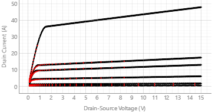
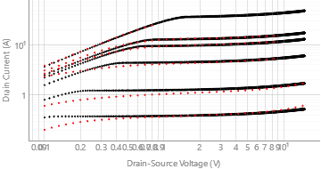
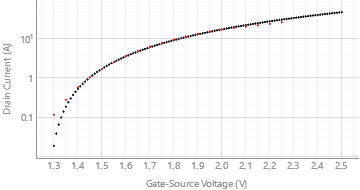
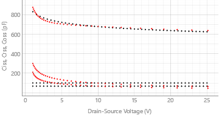
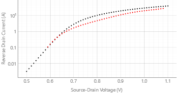

MOSFET LEVEL 1 (Shichman-Hodges Model)
L=1u, W=100u
| Name | Value | Unit | Description |
|---|---|---|---|
| vto | 1.275E+00 | V | Zero-bias threshold voltage |
| kp | 4.913E-01 | A/V2 | Transconductance parameter |
| gamma | 0.000E+00 | V1/2 | Bulk threshold parameter |
| phi | 6.000E-01 | V | Surface potential |
| lambda | 2.729E-02 | 1/V | Channel length modulation |
| rd | 9.205E-03 | Ω | Drain ohmic resistance |
| rs | 1.000E-03 | Ω | Source ohmic resistance |
| cbd | 9.911E-10 | F | Zero-bias B-D junction capacitance |
| cbs | 0.000E+00 | F | Zero-bias B-S junction capacitance |
| is | 1.546E-11 | A | Bulk junction saturation current |
| pb | 8.000E-02 | V | Bulk junction potential |
| cgso | 3.249E-07 | F/m | Gate-source overlap capacitance per meter channel width |
| cgdo | 6.683E-07 | F/m | Gate-drain overlap capacitance per meter channel width |
| cgbo | 0.000E+00 | F/m | Gate-bulk overlap capacitance per meter channel width |
| cj | 0.000E+00 | F/m2 | Zero-bias bulk junction bottom cap. per sq-meter of junction area |
| mj | 1.000E-01 | - | Bulk junction bottom grading coeff. |
| kf | 0.000E+00 | - | Flicker noise coefficient |
| af | 1.000E+00 | - | Flicker noise exponent |
| fc | 5.000E-01 | - | Coefficient for forward-bias depletion capacitance formula |
| tnom | 2.700E+01 | °C | Parameter measurement temperature |




